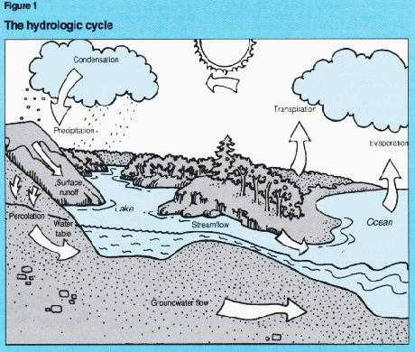
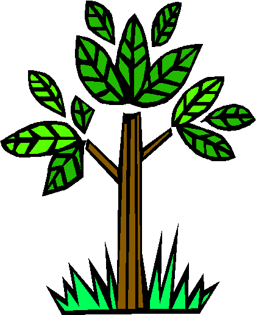
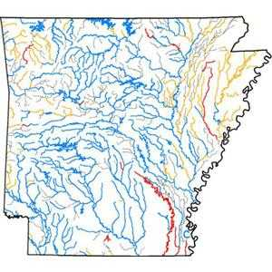
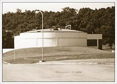

Article # 73
What is The Hydrologic Cycle of Arkansas and the Pollutants Affecting the Rivers and Streams We Use?


The Hydrologic Cycle of Arkansas and the Pollutants
Affecting the Rivers and Streams We Use
What is the Hydrologic Cycle?
Water moves in a continuous cycle. This cycle is called the hydrologic cycle. All of the water in Arkansas flows around in this natural circle of “water recycling”. To be specific, it goes through something called discharge and recharge. Recharge is the infiltration of precipitation or water from the streams or lakes into the ground water (Bryant, Ludwig, Morris: 4). Discharge occurs naturally when the ground water system is at capacity and cannot accept additional water (Bryant, Ludwig, Morris: 4). Water movement goes through the earth’s atmosphere, all the way to below the earth’s surface. You need to know how this part of the cycle works before you can understand how pollutants are breaking down this natural phenomenon in the state of Arkansas.
Let’s assume our starting point is the evaporation point. Evaporation is when water is carried up into the atmosphere in a gaseous, and collected into what we see as clouds (Bryant, Ludwig, Morris: 4). All the water that is evaporated from Arkansas is taken from our lakes, rivers, streams, soils, and transpiration from plants. All this forms our clouds overhead. These clouds later return our water to us in the form of precipitation. Arkansas’ most common form of precipitation is rainfall. Part of this rain infiltrates into the ground, while the rest run off into streams, rivers, and lakes. After this where it again evaporates back into the atmosphere. This sounds so simple, yet it is more complicated, and that’s where we run into the trouble of water pollution. Runoff is where a major part of the problem lies. The amount of runoff that a given storm will generate is dependent on the hydrological characteristics of the watershed in which the rainfall occurs. Urban development increases runoff by altering the attributes of a certain natural watershed that tends to inhibit runoff.
The precipitation that flows into the ground passes through two zones, the unsaturated, and the saturated. The unsaturated zone consists of the land surface itself, and up to several feet beneath the surface. This zone supports the soil, insects, and bacteria living in the soil. The permeability of this zone is dependent on these living organisms that reside there. This area filters water, keeps runoff to a minimum, and also brings water down in to recharge zone through plant’s roots that live in the dirt. Permeable materials also allow contaminates to enter the ground-water system. Therefore, the potential for contamination is closely related to the recharge rate. Leaves on trees shrubs, and grass intercept raindrops; therefore a part of that rain adheres to plant surfaces. When the storage capacity of the watershed is reached, dense vegetation impedes the flow of runoff. In an urban environment there is generally less vegetation to intercept rainfall. This of course causes runoff to increase. When we continually build and construct, we take away our natural water filter. Farm’s agriculture wastes seep into our soil through this process and filter into our ground water. Run off of oil and dirt from cars on the interstates flows off into ditches and seeps into the ground water. Once again we cannot make new water, so in a twisted way we drink all these pollutants.
The saturated zone is what we refer to as our ground water. The saturated zones we actually use as a population are referred to aquifers. It can only be called aquifer if the water from the recharged unsaturated zone can yield usable quantities of water to wells or springs, the key word being usable. All of this groundwater movement is only one phase of the Hydrologic Cycle.
Ground Water in Arkansas, Where is it located?
Ground water occurs in two settings of the state. The southeast corner is called the Gulf Coastal Plain. The North West Corner is referred to as The Interior Highlands (Fenneman, 1938 AR. Ground water problems). All ground water is closely related to the types of rocks that exist in each geographic area. The Gulf Coastal Plain makes up approximately 27,000 square miles of southeast Arkansas (AR. Water Pro.Mang.Report 1999). Water in this area is particularly abundant. This ground water is actually obtained from six different aquifers; Quaternary deposits, Cockfield Formation, Sparta Sand, Wilcox Group, Nacatoch Sand, and the Tokio Formation. These are just the main ones; some rural areas may have other supply sources. The Quaternary Deposit has a main use. It is where we typically get our irrigation water. The remaining five are a thick sequence of semi-consolidated sediments containing water bearing units that spread out parallel to the fall line. This “Fall Line”, divides the Gulf Coastal and the Interior Highlands. All of these formations are made of thick layers of sand that is essential to freshwater aquifers. Though this area has water available, large-scale withdrawals are consequently causing water levels to decline at a rapid rate (AR. Dept. of Pollution Control and Ecology; 1998).
The Interior Highlands encompass about 31,000 square miles in the northwest half of the state and are underlain by thick sequences of consolidated rocks consisting of limestone, dolomites, sandstones and shale (AR. Water Pro.Mang.Report 1999). The ground water occurs in the fractures of these layers of sandstone and limestone joints. These are the water source of many rural homes in the region. Water is not as abundant as in the Gulf Coastal, nonetheless wells can average about 150 feet in depth, and yield less than 10 gallons per minute (National Water Quality Inventory:1998 http://www.epa.gov). This is why ground water is relatively scarce in this area, and we have to find other sources that are more readily available. Ground water is always governed by natural constraints. The rockier, the less water you can get to, and the flatter and softer, the better. Now that we have general idea of how Arkansas water works, lets find out how pollution is affecting it.
What is water pollution?
Water pollution can be defined as the contamination of streams, lakes, underground water, bays, or oceans by substances harmful to living things (Dr. Ken Rubin Assistant Professor, Univ. Hawaii). There are two general categories; “direct” and “indirect” contaminant sources. These can also be described as “point” and “non-point” sources. Direct sources come from waste products of factories and waste treatment plants, where as indirect come from agricultural products. These indirect sources seep into our ground water, and eventually find there way back into the atmosphere through the hydrologic cycle.
Contaminates have their own categories. Some include organic and inorganic, radioactive, and acid/base contaminants. Some contaminants from industrial wastes appear to have entered shallow aquifers (AR. Dept. of Pollution Control and Ecology). Recent reports have shown concentrations of arsenic, barium, cadmium, chromium, lead, mercury, nitrate, selenium, and silver. All of which are exceeding safe drinking water limits. In addition to these organic contaminants, studies show ethlenedibromide, and phenols, for which no limits have been established (AR. Dept. of Pollution Control and Ecology).
The potential for groundwater contamination by hazardous materials disposed of on the land surface coincide generally with the recharge rate to aquifers (Morris: 12). Sources of high potential problems are waste impoundments, landfills (open, and filled), and hazardous waste operations. Other more rural problems can be storage tanks, septic tanks, waste injection wells, and pipelines leading to rivers and streams. Mining activities and wastes spilled during transport are other causes as well. There are more than 340 landfills, including sanitary landfills, open dumps, legally closed dumps, and abandoned ones (AR. Dept. of Pollution Control and Ecology). Though we have this information, we still lack the knowledge of what has been disposed in them. Further more, we have little to no documentation on any underlying aquifers.
Water pollution affects everyone and everything. Poisons are in our drinking water, in plants that other animals eat, that in turn we eat, and there lies the cycle of contamination. Water never goes away it just goes in a cycle. It has been here since the beginning of time. The quality of our water is not what it was during the dinosaur age though.
What and where are the problems?
Arkansas is known as the Natural State, even though we have our share of environmental problems. One of them being water pollution. Siltation and turbidity are the most frequently identified pollutants impairing Arkansas’ rivers and streams (EPA 1998 report to Congress). The number one pollutant in Arkansas is agriculture waste, followed by municipal wastewater treatment plants, mining, industrial discharges, and construction waste. Most of these pollutants flow directly into the rivers and streams, rather than the lakes of Arkansas. For the most part however, Arkansas has above average water quality. The Arkansas Department of Environmental Quality reported 69% of surveyed rivers and streams and 100% of lakes have good water quality that fully supports aquatic life uses. Arkansas uses six different ecoregions to assess problems. They include:
The Delta
Gulf Coastal
Ouchita Mountain
Arkansas River Valley
Boston Mountain
Ozark Mountain
These areas all have similar physical, chemical, and biological characteristics. Classifying water resources this way helps address issues that belong together (http://www.epa.gov).
What has been done to help the situation?
In 1972 we as a nation took a great step to clean up the water problem. The Clean Water Act was passed, and every state had to take part, including Arkansas(http://www.greentruck.com). This law, in theory, was supposed to help pollution discharges into surface waters. Any one who did discharge pollution had to have a permit by federal law and over time reduce the amount they gave off. This law also authorized federal grants to help states build water treatment plants that remove pollutants. As a result of this law, our water quality has dramatically improved.
A survey of rivers and streams in 1990 found that three-quarters of these waters were clean enough for fishing and swimming (Hart 2000). The Safe Drinking Water Act passed in 1974 by The EPA set standards for every state to filter water treatment plants. This law was amended in 1986 and 1996 to keep up with further changes. Among other changes, the SWDA required all water drawn from surface water supplies be filtered to remove Crytospordium bacteria by the year 2000. It is said that America has the safest drinking water in the world, but many water utilities provide tap water that failed to meet EPA standards.
More close to home, the Arkansas Nonpoint Source Pollution Management Program is working to help Arkansas water quality. This group closely monitors water quality, research into helping problems, and the impanation of correcting problems. Counties that have used funds from (Section 319) to clean up water pollution, due to agricultural products include; Van Buren, White, Cleburne, Conway, and Faulkner. These districts used this grant to purchase, restore, and maintain a portable land application system for liquid animal waste. The system collects 30 to 40 different dairies waste products and dispose of them in field to give nutrients to soil. These programs helped show farmers how to take their harmful water, recycle it, and return it to the pastures. The state of Arkansas Department of Pollution Control and Ecology Water Division made drastic changes in the 1990’s. Two revisions’ that are important are:
40 CFR 122 (February 19, 1993)
“Any existing “ treatment works treating domestic sewage” required to have, or requesting site-specific pollutant limits as provided in 40 CFR part 503, must submit the permit application information within 180 days after publication of a standard applicable to its sewage sludge use or disposal practice (s). After this 180-day period, “treatment works treating domestic sewage may only apply for site-specific pollutant limits for good cause and such requests must be made within 180 days of becoming aware that good cause exists.”
This law is what allows farmers to dump waste for good cause. Another guideline that is important is:
40 CFR part 257 (February 19, 1993)
“Guidelines for disposal of sewage sludge on the land when the sewage sludge is not used or disposed through a practice regulated in 40 CFR part 503. Sewage sludge means solid, semi-solid, or liquid residue generated during the treatment of domestic sewage in a treatment works.”
Violations of any of these codes have strict penalties provided in the Arkansas Water and Air Pollution Control Act.
How can we help as ordinary people?
To help with the agricultural waste farmers can do little things to help clean up. Dead poultry composting, nutrient management programming, pasture management, proper grazing use, waste management systems, and waste management ponds are all things that Arkansas farmers can take part in. In other words, if we can recycle what is waste at first, we can greatly decrease the numbers. We have to act responsively with the use of household chemicals, and their disposal. Driving to work every day has an affect on water pollution because of run off, and the hydrologic cycle. Getting involved, as a community is what it will take to fix the current water problems. An example of this is Cadron Creek. Cadron Creek watershed is a five county rural region of central Arkansas. It also has one of the highest concentrations of poultry and dairy farming (section 319 II). Cadron Creek is used for numerous recreation activities. Brewer Lake is where Morrilton and Conway get their drinking water. This region as a community has used money to educate farmers in animal waste management. There are other ways to help keep water clean. In the fields plowing at an upward slope from the streams and rivers will help run off. Leaving trees and other vegetation that line the banks of water sources help keep erosion from happening, and keeps stability when fighting sediment buildup. At home in the city people can help too by not dumping old engine oil that can contaminate near by water sources. Garden pesticides and fertilizers can cause eutrophication, so building our own compost heaps to use as fertilzer would be more effecitent. Construction sites can lay down tarps, and build sediment traps. They can also lie out grass seeds to encourage plant growth. There are many different organizations that people can join. Consult your government pages in the telephone book to learn more about environmental quality groups.
How is the Water here in Conway?
Conway receives its drinking water from Brewer Lake in Conway County. In the 1980’s, The Corps of Engineers awarded a contract for a dam to be built on Brewer Lake. In 1982 it was finished, and a reservoir area was cleared by 1983. Brewer Lake covers 1165 acres, and holds 7.6 Billion gallons of water (Water Systems of Conway). It is estimated that this should hold us for the next 50 years.
The water purification system starts The Gleason Water Treatment Plant on Highway 64 West at Highway 319. There is a pipeline from the lake that takes the water to a flash mixer where it is put in with lime, alum, and sometimes carbon to remove the impurities from the water. After this process flocculators rotate the water to keep the silt from settling. The water then goes to two clarifiers where the silt is allowed to settle and siphons can later pick up the silt from the bottom.
Next, the water passes through 30 inches of coal, sand, garnet, and gravel in 14 different filter beds. Later chlorine is added to prevent dental cavities. In all this process filters 15 million gallons a day.
After all this filtering six high service pumps transfer water from the plant to storage. In the distribution system, networks of underground water mains carry water to the individual water user.
How does Conway Clean their Water?
The Waste Water Treatment Plant is located on Stanley Russ Road. It is capable of filtering 6 million gallons a day. The procedure that cleans the water is called the Activated Sludge Process. This is a biological wastewater treatment process in which a mix of wastewater and activated sludge is agitated and aerated. The sludge is subsequently separated from treated wastewater by sedimentation, wasted and returned to the process as needed.
The activated sludge process begins with the collection system, which carries the flow of wastewater to the treatment plant. There are two major steps: the primary and the secondary. In each of these steps the objective is to remove what is called “Total Suspended Solids” (TSS), and “Biochemical Oxygen Demand” (BOD), from the incoming wastewater. TSS may be defined as “the suspended solids that do not naturally settle out of the wastewater” (Water Systems of Conway). BOD is “ the amount of oxygen used by microorganisms as the biologically decompose organic material in wastewater” (Water Systems of Conway). In nature, protozoa, fungi, algae and other organisms naturally break these down. In the treatment process we try to replicate this natural cleaning machine.
The Primary Treatment
Here the main goal is to screen large objects out such as sticks, cans, or any other inorganic material. Screens cannot remove everything, so we use primary clarifiers to treat any escapees of the screens. This process removes up to 50% of the TSS and BOD (Water Systems of Conway).
The Secondary Treatment
This process removes all other remaining organisms. An Aeration bed is where the water is moved where the natural process bacteria eat all solids. The wastewater then flows to a final clarifier where a floc forms from the solids, and settles to the bottom of the clarifier where a sludge digestor takes it away. All the solids taken away decompose to form a sludge that is used in nearby farming lands.
Now water is taken to the gravity filters and 98% of the remaining TSS and BOD are removed (Water Systems of Conway). The water is then disinfected to kill any remaining bacteria and discharged to the receiving stream of Stone Dam Creek. All this is provided by